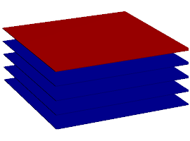

Hoy tuve dificultad al utilizar github y no pude realizar el ejercicio de graficar la encuesta
vimos que datos se repetían y buscamos graficar de cierto que nos brindara dicha información en una grafica de pastel


Se agruparon las actividades que eran similares y se contaron manualmente
Elegimos la columna número 5 y sacamos las palabras repetidas con la ayuda de chatGPT y las rectificamos manualmente e hicimos lo mismo con las palabras únicas (que no se repetían) Luego último hicimos la suma de las palabras repetidas y también sacamos el número de palabras únicas y por último hicimos un gráfico circular 3D con los números de las palabras repetidas

de manera manual tome los nombres de ias distintas y luego conté cuantas veces se repetía cada una, para al final juntar los valores y generar un anillo con Excel donde podemos ver que lo que vas se repite es chatgpt

yo utilice excel con formulas para sacar las palabras que estaban repetidas separando el texto y luego contando las palabras mas importantes de las inteligencias artificiales utilizando esta formula para contar las palabras que se repiten, SUMA(SI(NO(ESERROR(BUSCAR("chat"; A25:AY41)));1;0))+SUMA(SI(NO(ESERROR(BUSCAR("chat gpt"; A25:AY41)));1;0))

SE REALIZO UTILIZANDO FORMULA DE EXCEL Y TABLAS DINAMICAS.

David Sarria- Valentina Montealegre: Nos dimos cuenta que hay varias coincidencias y todas apuntan hacia el hecho de que todos contamos con habilidades blandas suficientes y exactas para llevar a cabo un excelente trabajo en equipo.

basicamente lo que hicimos fue indentificar, contar las palabras y finalmente estructuramos los resultados en una tabla de conteo que permite ver rápidamente la frecuencia de cada palabra y proporciona una vision general de los temas mas mencionados. los cuales son la inseguridad, contaminación y transporte

En la clase de hoy aprendi sobre algoritmos de busqueda y los tipos que existen
el término LIFO se utiliza en estructuras de datos y teoría de colas. Guarda analogía con una pila de platos, en la que los platos van poniéndose uno sobre el otro, y si se quiere sacar uno, se saca primero el último que se ha puesto.
Una búsqueda en profundidad (DFS) es un algoritmo de búsqueda para lo cual recorre los nodos de un grafo. Su funcionamiento consiste en ir expandiendo cada uno de los nodos que va localizando, de forma recurrente (desde el nodo padre hacia el nodo hijo).
La búsqueda en anchura, también conocida como BFS (breadth-first search en inglés), encuentra los caminos más cortos desde un vértice de origen dado a todos los demás vértices, en términos del número de aristas en los caminos.

| Algoritmo | Laberinto 1 | Laberinto 2 |
|---|---|---|
| DFS | 277 | 265 |
| BFS | 331 | 319 |
| Algoritmo | Laberinto 1 | Laberinto 2 |
|---|---|---|
| DFS | |
|
| BFS |
# -*- coding: utf-8 -*-
"""Tu primera red neuronal en Python y Tensorflow
Automatically generated by Colab. By Miguel
Original file is located at
https://colab.research.google.com/drive/1ehETBOVtCqe7G6HOvm84hfXba8Gd9ILW
"""
# Importa las bibliottecas Tensorflow y numpy
import tensorflow as tf
import numpy as np
#Se le da a la red unos ejemplos de entrada y salida
# Coloca en un arreglo temperaturas en celsius
celsius = np.array([-40, -10, 0, 8, 15, 22, 38], dtype=float)
# Coloca en un arreglo temperaturas en fahrenheit
fahrenheit = np.array([-40, 14, 32, 46, 59, 72, 100], dtype=float)
#Esta parte estaba comentada
#capa = tf.keras.layers.Dense(units=1, input_shape=[1])
#modelo = tf.keras.Sequential([capa])
# Crea una capa densa con 3 neuronas y una entrada de 1 dimensión
oculta1 = tf.keras.layers.Dense(units=3, input_shape=[1])
# Crea otra capa densa con 3 neuronas
oculta2 = tf.keras.layers.Dense(units=3)
# Crea la capa de salida con 1 neurona
salida = tf.keras.layers.Dense(units=1)
# Crea un modelo secuencial con las capas definidas
modelo = tf.keras.Sequential([oculta1, oculta2, salida])
# Compila el modelo, configurando el optimizador y la función de pérdida
modelo.compile(
optimizer=tf.keras.optimizers.Adam(0.1), # Usa el optimizador Adam
loss='mean_squared_error' # Función de pérdida: error cuadrático medio
)
# Muestra un mensaje indicando que comienza el entrenamiento
print("Comenzando entrenamiento...")
# Entrena el modelo con los datos de celsius y fahrenheit durante 1000 épocas
historial = modelo.fit(celsius, fahrenheit, epochs=1000, verbose=False)
# Muestra un mensaje indicando que el modelo ha sido entrenado
print("Modelo entrenado!")
# Importa la biblioteca Matplotlib para graficar
import matplotlib.pyplot as plt
# Etiqueta del eje X
plt.xlabel("# Epoca")
# Etiqueta del eje Y
plt.ylabel("Magnitud de pérdida")
# Grafica la magnitud de pérdida a través de las épocas
plt.plot(historial.history["loss"])
# Muestra un mensaje indicando que se hará una predicción
print("Hagamos una predicción!")
# Realiza una predicción para 100 grados Fahrenheit
resultado = modelo.predict([100.0])
# Muestra el resultado de la predicción
print("El resultado es " + str(resultado) + " fahrenheit!")
# Muestra un mensaje sobre las variables internas del modelo
print("Variables internas del modelo")
#print(capa.get_weights()) # (Este código está comentado y no se ejecutará)
# Muestra los pesos de la primera capa oculta
print(oculta1.get_weights())
# Muestra los pesos de la segunda capa oculta
print(oculta2.get_weights())
# Muestra los pesos de la capa de salida
print(salida.get_weights())
import itertools
class Sentence():
# Clase base para las sentencias lógicas
def evaluate(self, model):
# Método que debe ser implementado en clases derivadas para evaluar la sentencia lógica
raise Exception("nothing to evaluate")
def formula(self):
# Retorna la representación de la sentencia lógica como cadena
return ""
def symbols(self):
# Retorna un conjunto de símbolos utilizados en la sentencia lógica
return set()
@classmethod
def validate(cls, sentence):
# Valida si una instancia es una sentencia lógica
if not isinstance(sentence, Sentence):
raise TypeError("must be a logical sentence")
@classmethod
def parenthesize(cls, s):
# Agrega paréntesis a una expresión si no está ya parentizada correctamente
def balanced(s):
# Verifica si una cadena tiene paréntesis balanceados
count = 0
for c in s:
if c == "(":
count += 1
elif c == ")":
if count <= 0:
return False
count -= 1
return count == 0
if not len(s) or s.isalpha() or (s[0] == "(" and s[-1] == ")" and balanced(s[1:-1])):
return s
else:
return f"({s})"
class Symbol(Sentence):
# Representa un símbolo lógico (variable)
def __init__(self, name):
self.name = name
def __eq__(self, other):
# Comprueba si dos símbolos son iguales
return isinstance(other, Symbol) and self.name == other.name
def __hash__(self):
# Define un hash único para el símbolo
return hash(("symbol", self.name))
def __repr__(self):
# Representación del símbolo
return self.name
def evaluate(self, model):
# Evalúa el valor del símbolo en un modelo dado
try:
return bool(model[self.name])
except KeyError:
raise EvaluationException(f"variable {self.name} not in model")
def formula(self):
# Retorna el nombre del símbolo
return self.name
def symbols(self):
# Retorna un conjunto con el símbolo
return {self.name}
class Not(Sentence):
# Representa una negación lógica
def __init__(self, operand):
Sentence.validate(operand)
self.operand = operand
def __eq__(self, other):
return isinstance(other, Not) and self.operand == other.operand
def __hash__(self):
return hash(("not", hash(self.operand)))
def __repr__(self):
return f"Not({self.operand})"
def evaluate(self, model):
# Retorna la negación del valor del operando
return not self.operand.evaluate(model)
def formula(self):
# Retorna la fórmula de la negación
return "¬" + Sentence.parenthesize(self.operand.formula())
def symbols(self):
# Retorna los símbolos presentes en la negación
return self.operand.symbols()
class And(Sentence):
# Representa una conjunción lógica (AND)
def __init__(self, *conjuncts):
for conjunct in conjuncts:
Sentence.validate(conjunct)
self.conjuncts = list(conjuncts)
def __eq__(self, other):
return isinstance(other, And) and self.conjuncts == other.conjuncts
def __hash__(self):
return hash(("and", tuple(hash(conjunct) for conjunct in self.conjuncts)))
def __repr__(self):
conjunctions = ", ".join([str(conjunct) for conjunct in self.conjuncts])
return f"And({conjunctions})"
def add(self, conjunct):
# Añade una nueva conjunción
Sentence.validate(conjunct)
self.conjuncts.append(conjunct)
def evaluate(self, model):
# Retorna True si todas las conjunciones son verdaderas en el modelo
return all(conjunct.evaluate(model) for conjunct in self.conjuncts)
def formula(self):
# Retorna la fórmula de la conjunción
if len(self.conjuncts) == 1:
return self.conjuncts[0].formula()
return " ∧ ".join([Sentence.parenthesize(conjunct.formula()) for conjunct in self.conjuncts])
def symbols(self):
# Retorna los símbolos presentes en la conjunción
return set.union(*[conjunct.symbols() for conjunct in self.conjuncts])
class Or(Sentence):
# Representa una disyunción lógica (OR)
def __init__(self, *disjuncts):
for disjunct in disjuncts:
Sentence.validate(disjunct)
self.disjuncts = list(disjuncts)
def __eq__(self, other):
return isinstance(other, Or) and self.disjuncts == other.disjuncts
def __hash__(self):
return hash(("or", tuple(hash(disjunct) for disjunct in self.disjuncts)))
def __repr__(self):
disjuncts = ", ".join([str(disjunct) for disjunct in self.disjuncts])
return f"Or({disjuncts})"
def evaluate(self, model):
# Retorna True si alguna de las disyunciones es verdadera en el modelo
return any(disjunct.evaluate(model) for disjunct in self.disjuncts)
def formula(self):
# Retorna la fórmula de la disyunción
if len(self.disjuncts) == 1:
return self.disjuncts[0].formula()
return " ∨ ".join([Sentence.parenthesize(disjunct.formula()) for disjunct in self.disjuncts])
def symbols(self):
# Retorna los símbolos presentes en la disyunción
return set.union(*[disjunct.symbols() for disjunct in self.disjuncts])
class Implication(Sentence):
# Representa una implicación lógica (=>)
def __init__(self, antecedent, consequent):
Sentence.validate(antecedent)
Sentence.validate(consequent)
self.antecedent = antecedent
self.consequent = consequent
def __eq__(self, other):
return (isinstance(other, Implication)
and self.antecedent == other.antecedent
and self.consequent == other.consequent)
def __hash__(self):
return hash(("implies", hash(self.antecedent), hash(self.consequent)))
def __repr__(self):
return f"Implication({self.antecedent}, {self.consequent})"
def evaluate(self, model):
# Retorna True si la implicación es verdadera en el modelo
return (not self.antecedent.evaluate(model) or self.consequent.evaluate(model))
def formula(self):
# Retorna la fórmula de la implicación
antecedent = Sentence.parenthesize(self.antecedent.formula())
consequent = Sentence.parenthesize(self.consequent.formula())
return f"{antecedent} => {consequent}"
def symbols(self):
# Retorna los símbolos presentes en la implicación
return set.union(self.antecedent.symbols(), self.consequent.symbols())
class Biconditional(Sentence):
# Representa una bicondicional lógica (<=>)
def __init__(self, left, right):
Sentence.validate(left)
Sentence.validate(right)
self.left = left
self.right = right
def __eq__(self, other):
return (isinstance(other, Biconditional)
and self.left == other.left
and self.right == other.right)
def __hash__(self):
return hash(("biconditional", hash(self.left), hash(self.right)))
def __repr__(self):
return f"Biconditional({self.left}, {self.right})"
def evaluate(self, model):
# Retorna True si ambos lados de la bicondicional son iguales en el modelo
return ((self.left.evaluate(model) and self.right.evaluate(model))
or (not self.left.evaluate(model) and not self.right.evaluate(model)))
def formula(self):
# Retorna la fórmula de la bicondicional
left = Sentence.parenthesize(str(self.left))
right = Sentence.parenthesize(str(self.right))
return f"{left} <=> {right}"
def symbols(self):
# Retorna los símbolos presentes en la bicondicional
return set.union(self.left.symbols(), self.right.symbols())
def model_check(knowledge, query):
# Verifica si una base de conocimiento implica una consulta
def check_all(knowledge, query, symbols, model):
# Verifica si la base de conocimiento implica la consulta en un modelo particular
if not symbols:
if knowledge.evaluate(model):
return query.evaluate(model)
return True
else:
# Selecciona un símbolo no asignado en el modelo
remaining = symbols.copy()
p = remaining.pop()
# Crea un modelo donde el símbolo es verdadero
model_true = model.copy()
model_true[p] = True
# Crea un modelo donde el símbolo es falso
model_false = model.copy()
model_false[p] = False
# Verifica que se cumpla la implicación en ambos modelos
return (check_all(knowledge, query, remaining, model_true) and
check_all(knowledge, query, remaining, model_false))
# Obtiene todos los símbolos presentes en la base de conocimiento y en la consulta
symbols = set.union(knowledge.symbols(), query.symbols())
# Verifica si la base de conocimiento implica la consulta
return check_all(knowledge, query, symbols, dict())
Este código define una estructura para manejar sentencias lógicas, permite evaluar dichas sentencias en diferentes modelos.
El código incluye métodos para:
Además, incluye el método model_check, que verifica si un conjunto de conocimientos implica una consulta dada. Esto se realiza evaluando todas las posibles combinaciones de verdad/falsedad para las variables involucradas.
from logic import *
lluvia = Symbol("lluvia")
bbc = Symbol("bbc")
unimayor = Symbol("unimayor")
knowledge = And(
Implication(Not(lluvia), bbc),
Or(bbc, unimayor),
Not(And(bbc, unimayor)),
unimayor
)
print(model_check(knowledge, lluvia))